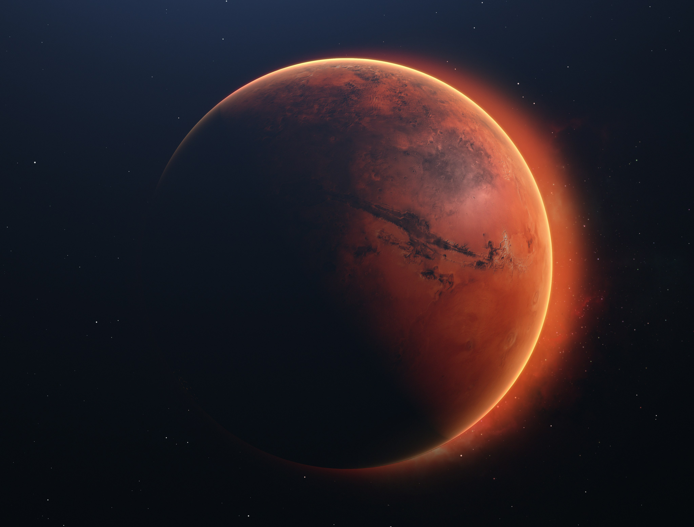
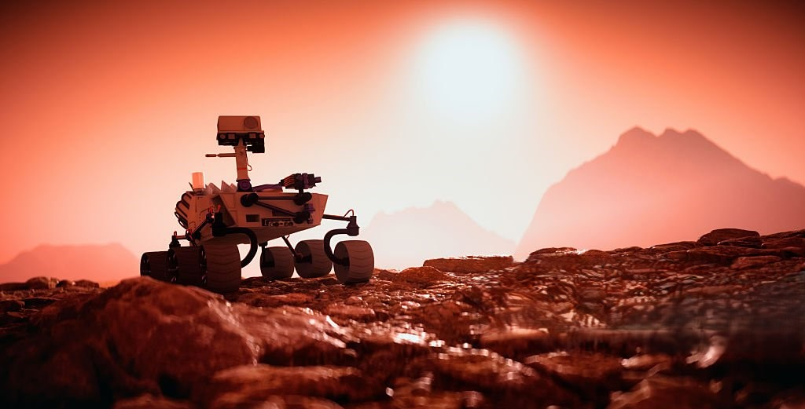
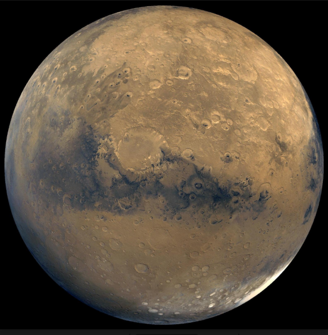
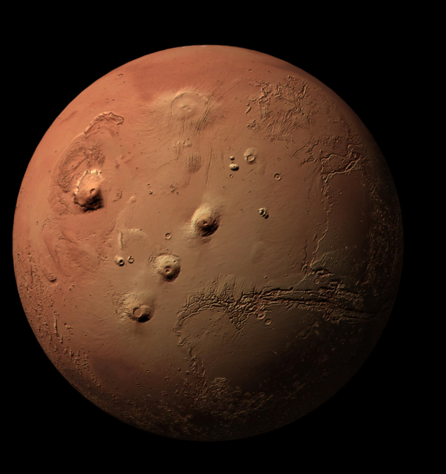
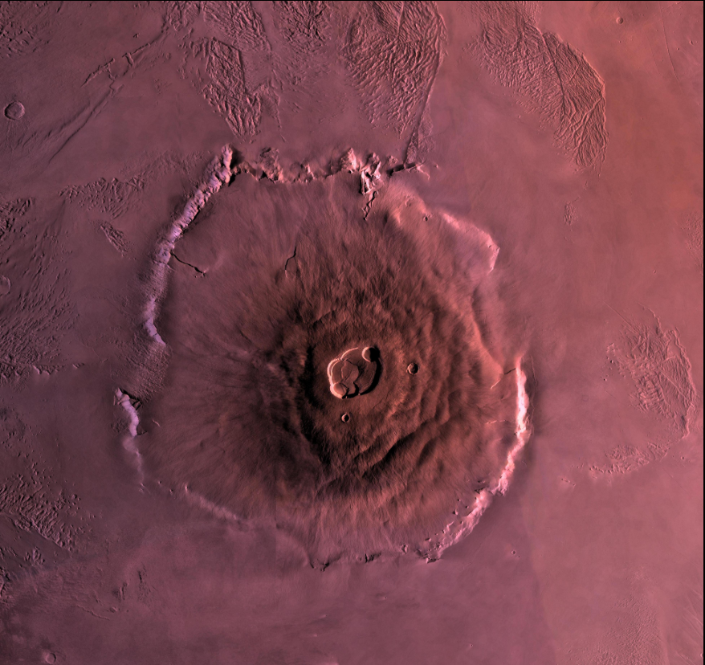

Planet Mars
Mars is the fourth planet from the Sun. It is often called the Red Planet because of its dusty and reddish surface.

Quick Facts
- Mars is smaller than Earth.
- It has two small moons: Phobos and Deimos.
- A day on Mars is a little longer than a day on Earth.
- Mars is very cold and dry.
Why is Mars interesting?
Scientists study Mars because it may once have had rivers and lakes. Today, robots explore its surface and send information back to Earth.

This image shows a Mars rover exploring the surface and collecting data for scientists on Earth.
Listen to the Atmosphere of Mars
This background sound creates an immersive space experience.
Press play and enjoy the atmosphere of Mars as you read.
Fun Fact
Mars has the largest volcano in the Solar System: Olympus Mons.
Olympus Mons
Olympus Mons is the largest volcano in the Solar System. It is about three times taller than Mount Everest, making it the tallest volcano in the Solar System and one of the most impressive geological features on Mars.

Full view of Mars from space.

Olympus Mons is located on the left side of the planet.

Close-up showing the crater and structure of Olympus Mons.